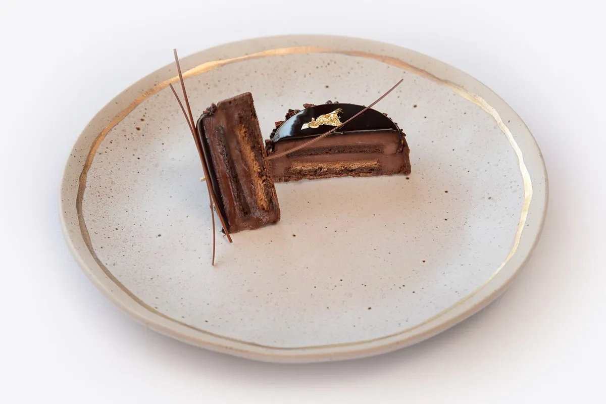
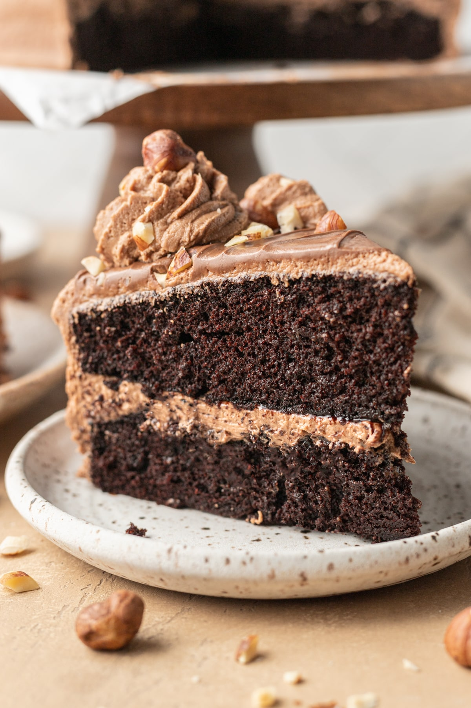

Global Hazelnut Dishes: What’s Trending Now
When people think of hazelnuts, they usually picture chocolate spreads or fancy desserts, but a recent TasteAtlas ranking of the “35 Best Rated Dishes With Hazelnuts” shows how global and versatile hazelnuts really are. The list highlights classic European desserts, layered pastries, creamy spreads, and even rich cakes where hazelnuts are the star ingredient. Instead of being a small topping, hazelnuts become the base of flavour and texture, giving desserts a deep, roasted taste that feels comforting and a bit luxurious.
The article organizes dishes by country and region, making it easy to see how different cultures use hazelnuts in their traditional recipes. Italian torta di nocciole, French-style praline cakes, and Turkish nut-filled pastries all show up, each with their own twist. One line from the article that stood out to me was: “Hazelnuts bring a warm, buttery depth to desserts across many regions.” This quote captures how hazelnuts aren’t just an add-on, but a key part of culinary identity in many places.
For Calgarians who love baking or café desserts, this list is a fun starting point for inspiration. You could try recreating a classic hazelnut cake at home, look for similar flavours in local bakeries, or even plan a future food trip based on some of these famous dishes. It also reminds us that a simple ingredient like hazelnuts can connect local kitchens to traditions from all over the world.
Read the full article: TasteAtlas – 35 Best Rated Dishes With Hazelnuts
What's New & Exciting!


My Favourite Picnic Spot in Calgary
My favourite picnic spot in Calgary is Prince’s Island Park because it feels peaceful, open, and perfect for relaxing near the water.
You can get there easily by walking across the pedestrian bridge from Eau Claire, and the pathways make it simple to explore.
The grassy areas, trees, and river views create a calm place to unwind with food, friends, and sunshine.
Google Maps
Hazelnut Friends & Resources
Check back soon for hazelnut cafés, recipe blogs, and local Calgary partners that love hazelnuts as much as we do.